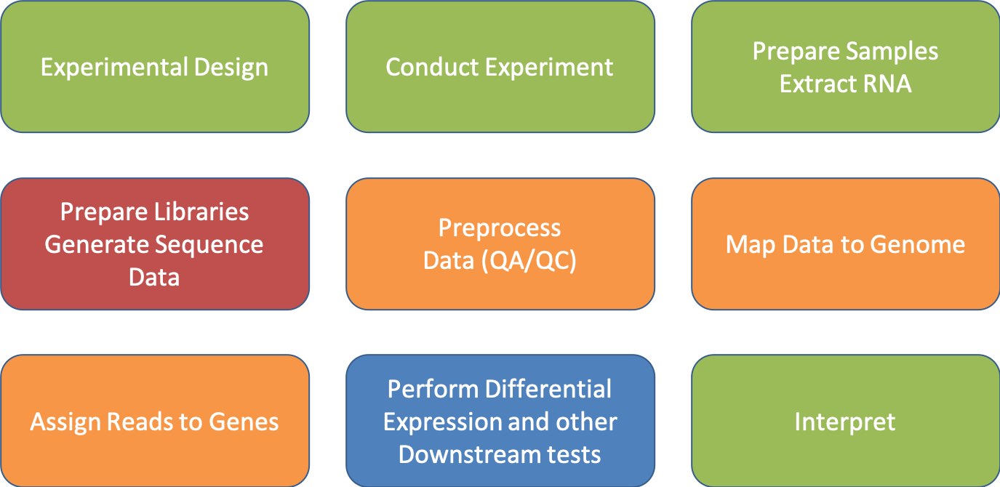

Closing Thoughts
The forest through the trees.

Be Consistent
- Be Consistent
- Be Consistent
- Be Consistent
- Be Consistent
- Be Consistent
Prerequisites for bioinformatics
- Access to a multi-core (24 cpu or greater), ‘high’ memory 64Gb or greater Linux server.
- Familiarity with the ’command line’ and at least one programming language.
- Basic knowledge of how to install software
- Basic knowledge of R (or equivalent) and statistical programming
- Basic knowledge of Statistics and model building
The bottom line
- Spend the time (and money) planning and producing good quality, accurate and sufficient data for your experiment.
- Get to know to your data, develop and test expectations
- Result, you’ll spend much less time (and less money) extracting biological significance and results during analysis.
Workshop Week 2 reservation
workshop ACTIVE 2019-08-19T00:00:00 2019-08-31T00:00:00 12-00:00:00 rafter-[0,2,8,14,18]
My recommendation is to follow all of the instructions again, from the beginning on your own and send emails to
bioinformatics.training@ucdavis.edu
And we will be responsive to answering questions.
Upcoming Workshops
Now in our 12th year of training researchers, the UC Davis Bioinformatics Core invites you to attend one or more of our 2019 workshops. The following workshops are suitable for beginners, and are also of interest to those with some data analysis experience.
For more information on these and other events, and to register, go to https://registration.genomecenter.ucdavis.edu/
September 3-6: Microbial Community Analysis @ UC Davis
This workshop covers amplicon-based microbial analysis and methodology using high throughput sequencing technologies. Topics will include:
- Differences between community analysis with amplicons versus shotgun metagenomics and metatranscriptomics
- Experimental design
- Sequence data quality assurance and expectations
- Processing of amplicon reads (using the python application dbcAmplicons)
- Analysis of community structure (using R and vegan)
- Lecture on metagenome assembly and metatranscriptome assembly and annotation
- Post analysis and visualization (using R)
Exercises will be performed with provided datasets, using command-line interaction and with RStudio.
For more information and to register, go to https://registration.genomecenter.ucdavis.edu/.
December: Bioinformatics Prerequisites Workshop @ UC Davis
This workshop will cover the basic prerequisites required before performing bioinformatics analysis, including basic command line and high performance computing concepts, how to install software, use help, run applications, and advanced command line (shell scripting, pipes, etc.). Also covered will be basic R programming, basic statistical concepts, and model building. There are no prerequisites for this workshop other than an interest in bioinformatics!
Contact and Notifications
Questions about training? Contact us at training.bioinformatics@ucdavis.edu
To subscribe / unsubscribe from the Bioinformatics Core email lists, please follow the instructions at the bottom of http://bioinformatics.ucdavis.edu/contact-us/.